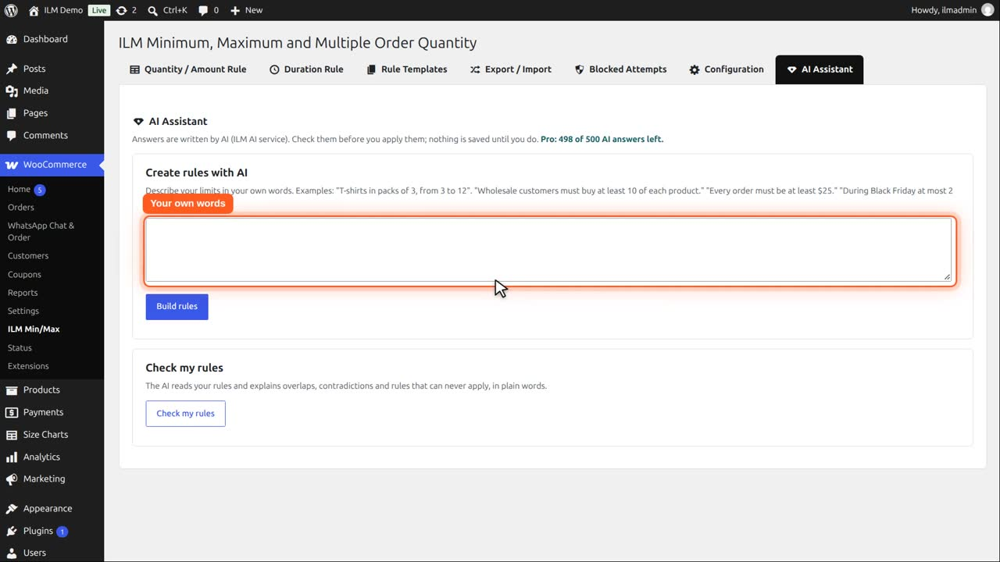
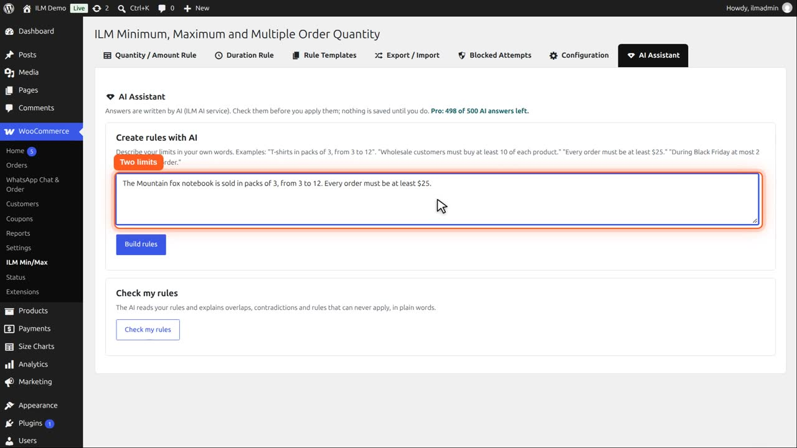
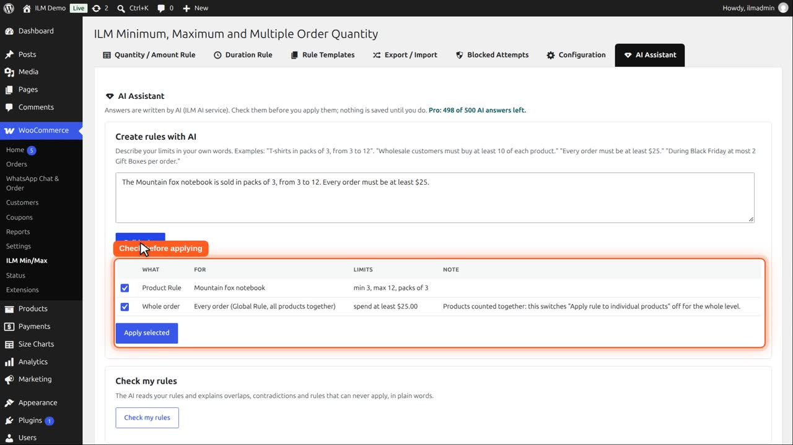
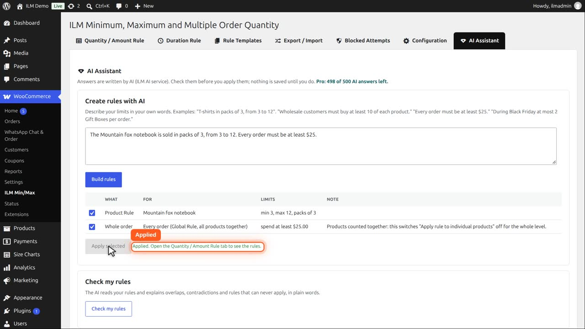
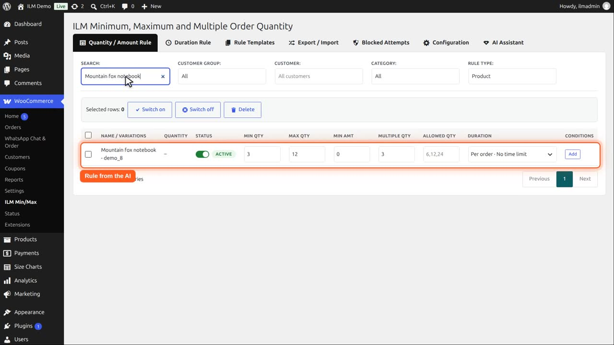
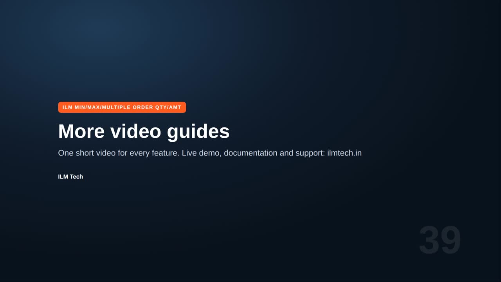

Pro add-on. This feature needs the Pro add-on. See Free and Pro.
Open the AI Assistant tab. Above it you see how many AI answers are left in your plan.

Describe your limits in your own words. Here: the Mountain fox notebook in packs of three, from three to twelve, and every order at least twenty five dollars.

Click Build rules. After a moment the AI shows the rules it would create, one per line, in plain words. Nothing is saved yet.

Untick any line you do not want, and click Apply. The rules are saved, checked like rules typed by hand.

On the rule table, the notebook now has its minimum, maximum and pack size.

Check my rules reads all your rules and explains overlaps, contradictions and rules that can never apply, in plain words.
